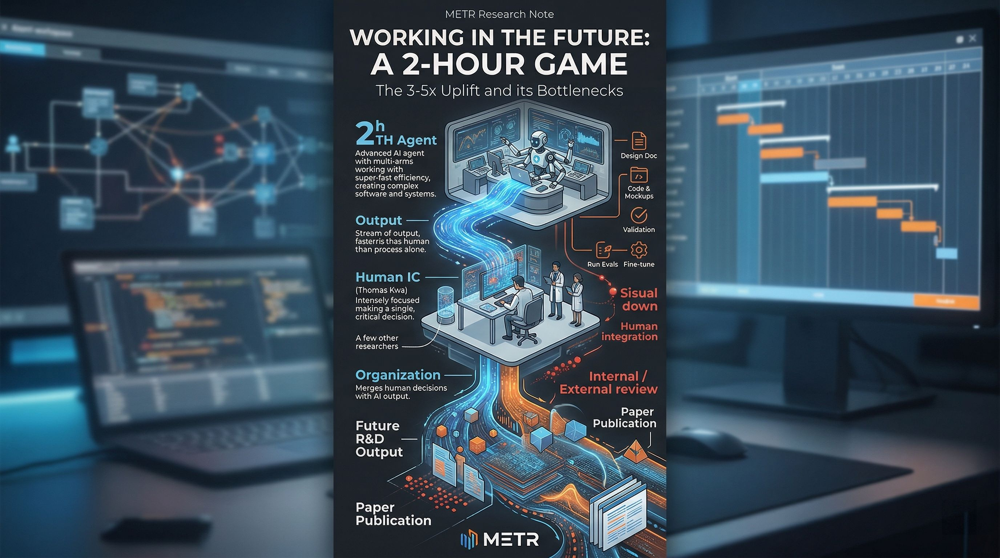

被产品和市场打了30次脸，我才看懂AI落地的真相
就在刚刚，OpenAI 总裁 Greg Brockman「认罪」...
凌晨三点，我被一条消息炸醒。OpenAI 正式宣布关停 Sora，连迪士尼十亿美元的单子都退了。待发
有人说这是战略调整，但在我看，这是 Greg Brockman 替整个行业「认罪」。认什么罪？认了「只搞技术不搞运营」的死罪。这话并非耸人听闻，而是基于 Sora 产品生命周期的残酷现实。
让我们拆开来看。Sora 的定位一开始就出了问题：它被包装成「AI 视频生成领域的颠覆者」，但实际落地的体验却像是实验室里的半成品。用户期待的是流畅、可分发的短视频内容，结果 Sora 生成的视频动辄需要 10 分钟以上的等待，而且质量参差不齐。根据内部泄露的数据，单次生成的平均耗时是 12 分 47 秒，而用户平均生成 10 条才能得到 1 条满意的成品——这意味着，获得一条可用视频，平均需要等待超过 2 小时。
更致命的是运营端的成本失控。Sora 的算力消耗是同类产品 DALL-E 3 的 40 倍，但生成内容的市场价值却远未匹配。OpenAI 内部曾评估，Sora 的每条视频生产成本在 1.3 美元到 33 美元之间，而用户愿意为一条视频支付的最高金额不足 2 美元。收支缺口不是缩小，而是随着使用量的增加

别觉得这话重。数据不会撒谎，Sora 的 30 天用户留存率仅 1%，60 天直接归零。生成视频的可用率只有 5% 到 10%，用户平均要生成 10 条


才能得到 1 条满意的。更要命的是，烧钱速度每天运营开销高达 1500 万美元。
一年就是 55 亿美元，生成一段 10 秒视频的成本从 1.3 美元起步，复杂场景飙到 33 美元。Sora 负责人自己都承认，这个模式完全不可持续。
没有运营支撑的 AI，只是昂贵的玩具。
这边 Sora 在流血，那边 ChatGPT 也在掉粉。根据 Sensor Tower 数据，其 4 月卸载量同比增长 132%，次月同比增幅更是高达 413%，这一趋势出现在 OpenAI 与五角达成协议之后。用户不傻，新鲜劲一过，留不住就是留不住。
反观国内，可灵 3.0 阶段留存均超 25%，可用率 80% 以上。差距在哪？不在模型参数，在落地场景，在运营效率。

资本还在狂欢。你看 Anthropic，三年从 41 亿到 9000 亿美元，约 220 倍。谷歌、亚马逊疯狂加注，2026 年拟融资 500 亿美元超越 OpenAI。这估值泡沫里，有多少是实打实的用户价值？
咱们初创团队，没那么多钱烧。我们得活下来，得赚钱。
这时候，content ops agent 的价值就出来了。不是让你去造大模型，而是让你用现有的模型，把内容营销的效率拉到极致。
我为什么这么笃定？因为我在 CreBee 看到了真实的数据增长。我们最近上线的团队版，支持 10 成员、100 社媒账号、不限量发布。这不是简单的账号管理，这是把 content ops agent 的能力封装成了基础设施。
很多创始人跟我抱怨，账号群 IP 集中容易被平台封杀。我们新增了网络代理设置服务，支持账号组独立 IP。这意味着什么？意味着你的矩阵账号能像真实用户一样安全运行，规避了账号群 IP 集中的平台风险。

技术圈都在谈 AI 智能体生态中 MCP 协议的应用趋势。CreBee 全功能 API MCP，时限 365 天，就是为了让你的智能体能无缝对接内容流。新增技能支持功能，便于集成到智能体，让 content ops agent 不再是空话。
你看，OpenAI 都在做减法，砍掉不赚钱的 Sora，集中精力去赚企业的钱。我们更应该做减法，把精力从「调参」转移到「运营」上。
AI 正在快速渗透科研领域，显著提升效率。但在商业领域，效率就是生命。一个 content ops agent 能帮你省下的时间，足够你多谈两个客户，多迭代一个版本。
别盯着那 9000 亿美元的估值看，那是巨头的事。咱们看的是下个月的现金流，是账号的存活率，是内容的转化率。
郭明錤爆料 OpenAI 将重新定义手机，联发科、高通与立讯精密将成为关键供应商。硬件在变，但内容分发的逻辑没变。谁能用最低成本获取流量，谁就是赢家。

我常跟团队说，黄仁勋表达对传统接班计划的质疑，偏好非传统管理理念。咱们做产品也一样，别走传统运营的老路。
传统运营是人海战术，一个人管五个账号累得半死。现在的玩法是，一个人管一百个账号，还能准时下班。靠什么？靠 content ops agent，靠自动化的流程，靠智能的决策。
CreBee 团队版就是为此而生。我们不拼模型大小，我们拼谁能帮你把内容发出去，谁能帮你把数据拿回来。
如果你也是初创型科技企业创始人，缺乏运营经验和时间，成本敏感，那你该试试这套打法。别等大厂把路都堵死了再想辙。
Sora 的退场并不意味着视频 AI 的终结，恰恰相反，这给其他玩家腾出了大片市场。字节的 Coze，即梦的 Dreamina，用户从 328 万涨到 572 万。市场还在，只是换了一批更能扛的人。
技术不落地，就是最大的成本。
机会就在眼前，要么拥抱变化，要么被变化淘汰。CreBee 的大门敞开，10 个成员席位，100 个账号矩阵，等着你来跑通你的第一个自动化闭环。
别犹豫，市场不等人。
今日互动关于「就在刚刚，OpenAI总裁Greg Br」，你怎么看？ 欢迎在评论区分享你的看法。